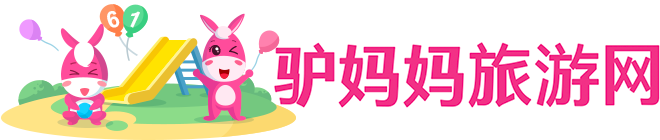

Scroll
建议
滚动条

長媽媽，已經說過，是一個一向帶領著我的女工，說得闊氣一點，就是我的保姆。我的母親和許多別的人都這樣稱呼她，似乎略帶些客氣的意思。只有祖母叫她阿長。我平時叫她“阿媽”，連“長”字也不帶；但到憎惡她的時候，——例如知道了謀死我那隱鼠的卻是她的時候，就叫她阿長。
我們那裡沒有姓長的；她生得黃胖而矮，“長”也不是形容詞。又不是她的名字，記得她自己說過，她的名字是叫作什麼姑娘的。什麼姑娘，我現在已經忘卻了，總之不是長姑娘；也終於不知道她姓什麼。記得她也曾告訴過我這個名稱的來歷：先前的先前，我家有一個女工，身材生得很高大，這就是真阿長。後來她回去了，我那什麼姑娘才來補她的缺，然而大家因為叫慣了，沒有再改口，於是她從此也就成為長媽媽了。
雖然背地裡說人長短不是好事情，但倘使要我說句真心話，我可只得說：我實在不大佩服她。最討厭的是常喜歡切切察察，向人們低聲絮說些什麼事，還豎起第二個手指，在空中上下搖動，或者點著對手或自己的鼻尖。我的家裡一有些小風波，不知怎的我總疑心和這“切切察察”有些關係。又不許我走動，拔一株草，翻一塊石頭，就說我頑皮，要告訴我的母親去了。一到夏天，睡覺時她又伸開兩腳兩手，在床中間擺成一個“大”字，擠得我沒有餘地翻身，久睡在一角的席子上，又已經烤得那麼熱。推她呢，不動；叫她呢，也不聞。
评论